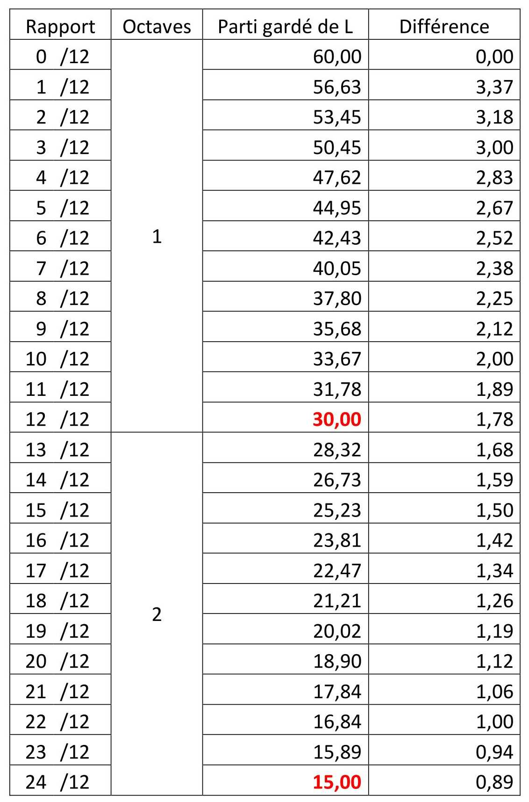

|

|
Les distances de cordes des notes ne sont pas espacées de la même distance et leur espacement diminue plus on veut une note aigue. Les frettes sont espacées régulièrement avec un rapport régulier mais pas avec une différence absolu régulier (Différences de longueur).
On est habitué à la régularité absolue ! avec le même écart ! Mais pas à la régularité multiplicative.
Cette correspondance entre un axe multiplicatif qui correspond a la note ou l’octave souhaiter et l’axe multiplicatif qui correspond a la distance de la corde, c’est la principe même des fonction puissance et logarithme : la puissance de la note a la longueur et logarithme pour avoir la note en fonction de la longueur.
Et on peut le remarquer car si on calcul ln(64) = 4,16 ; ln(32) = 3,47 et ln(16) = 2,77 on obtient une différence absolue !
4,16 - 3,47 = 0,69 Et 3,47 - 2,77 = 0,69
|